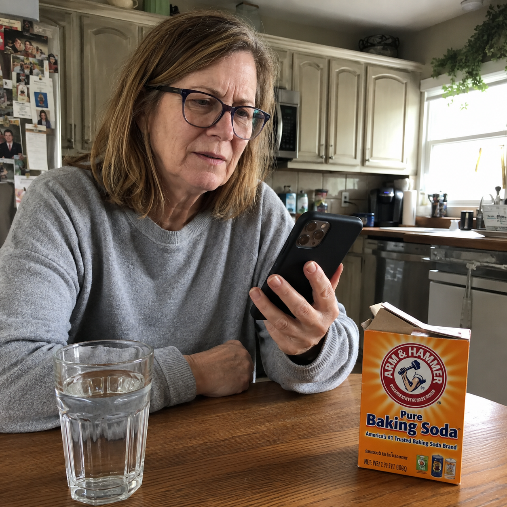
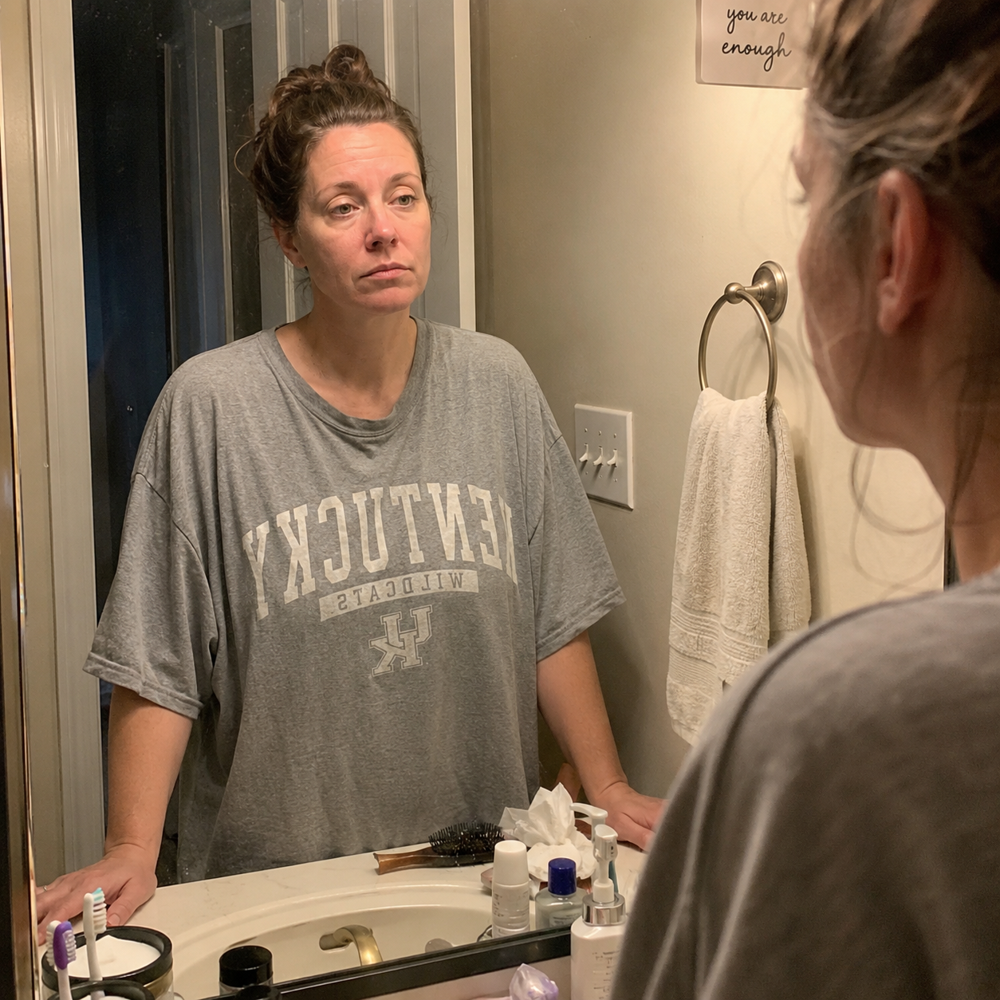
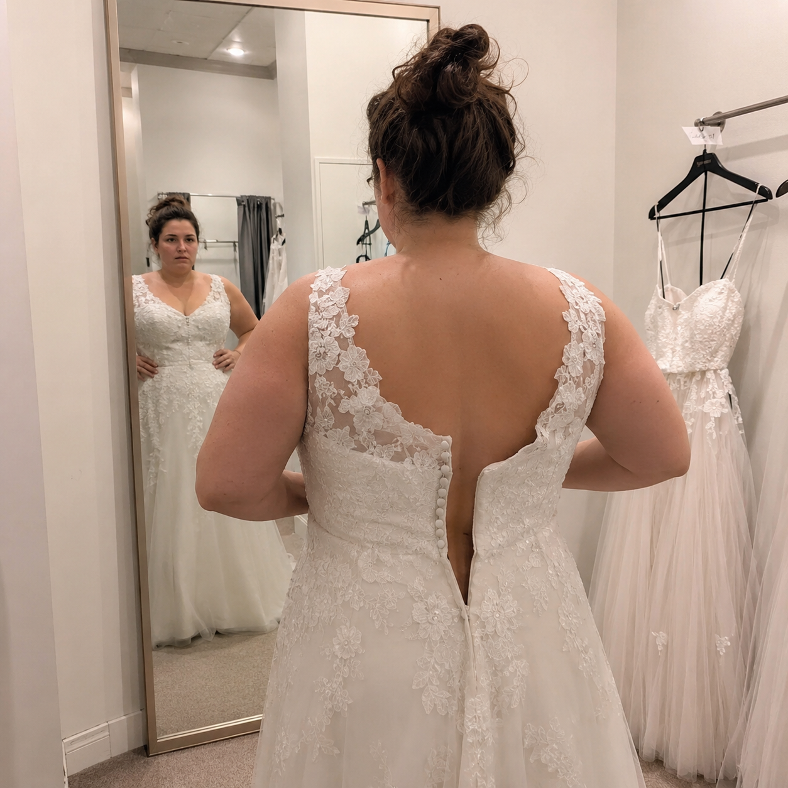
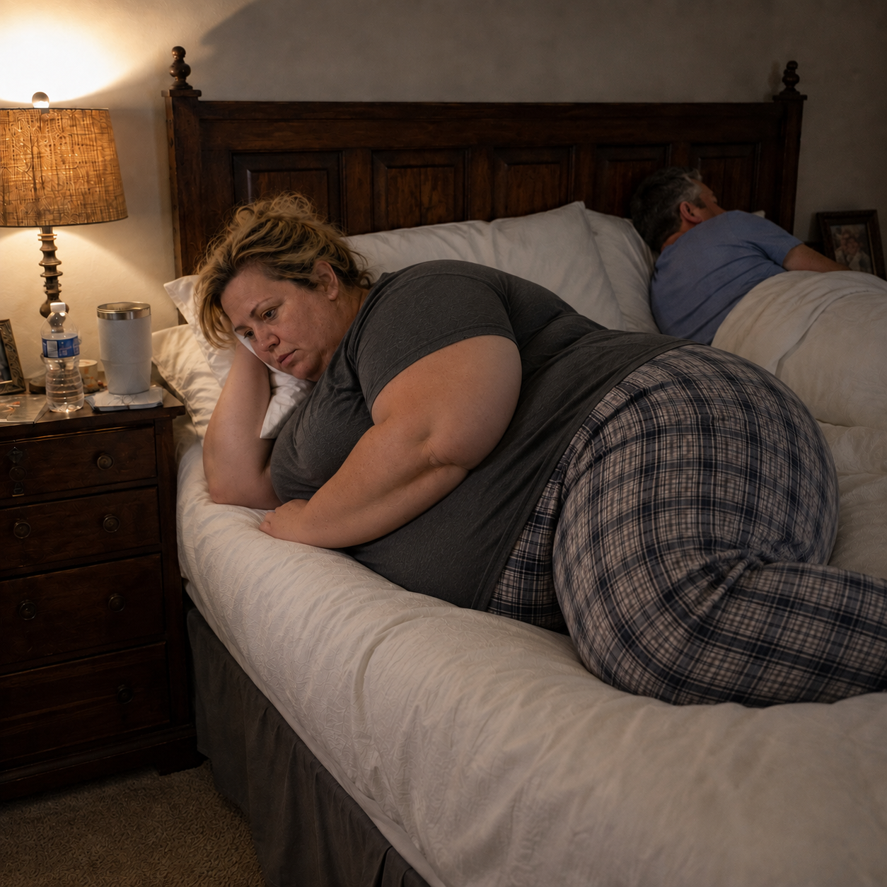
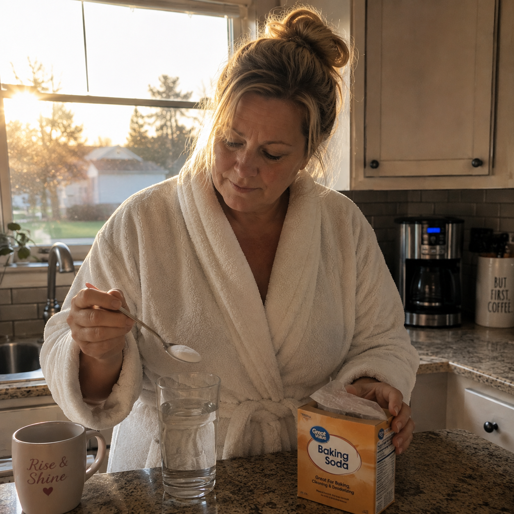

If you're taking baking soda to replace Mounjaro, grab a pen and paper because you might be doing it wrong… My God, how did I not find out about this sooner…
It all started after watching my sister Sarah's routine, she's 62. She eats a bagel with cream cheese every single day and still looks the same as she did in college.
My name is Jess. I'm 59. Two kids. One day we went out to eat and she finished her plate and still ate half of mine.
That night at home, I broke down crying in the bathroom after standing in front of the mirror for half an hour trying to understand what was wrong with my body.
I grabbed my phone and sent my sister a message… Before I went to bed her message came through, just a link to an article by a woman named Dana…
It was that same baking soda trick I saw on TikTok, but I realized it's actually a 3 step process that you don't learn from a 30 second TikTok video. The baking soda was just the first step of the recipe.
By the third day, that bloated feeling was gone. By the second week, I put on a size 6 pair of jeans that had been sitting in my closet for years. They zipped up.
Now? I'm eating real food. I'm not starving myself. I'm not injecting anything.
If you're exhausted from trying so hard and you think it's because of your age or menopause… Forget that… It was never your fault.
Click the "Learn More" button below and read the article right now before it gets taken down.
Se você está tomando baking soda para substituir o Mounjaro pegue papel e caneta pois você pode estar fazendo isso errado… Meu Deus, como eu não descobri isso antes…
Tudo começou após observar a rotina da minha irmã Sarah, de 62. Ela come bagel com cream cheese todos os dias e continua com a mesma aparência desde a faculdade.
Meu nome é Jess. Tenho 59 anos. Dois filhos. Certo dia saímos para comer e ela terminava o prato dela e ainda comia metade do meu.
À noite em casa, desabei a chorar no banheiro depois de ficar meia hora parada no espelho tentando entender o que havia de errado com meu corpo.
Peguei meu celular e enviei uma mensagem para minha irmã… Antes de ir deitar chegou a mensagem, apenas um link de um artigo de uma mulher chamada Dana…
Era o bendito truque do bicarbonato de sódio que vi no tiktok, mas percebi que se trata de um processo de 3 etapas que não se aprende em um vídeo de 30 segundos. O baking soda era apenas a primeira etapa da receita.
No terceiro dia, aquela sensação de estufamento tinha ido embora. Na segunda semana, vesti uma calça jeans tamanho 6 que estava guardada no armário há anos. Ela fechou.
Agora? Estou comendo comida de verdade. Não estou passando fome. Não estou injetando nada.
Se você está exausta de se esforçar tanto e acha que é por conta da idade ou menopausa… Esquece isso… A culpa nunca foi sua.
Clique no botão "Saiba Mais" abaixo e leia o artigo agora mesmo antes que ele saia do ar.

Seriously! If you use baking soda at home with these other two ingredients and don't lose at least 4 pounds a day, something is off.
I spent 25 years putting everyone else first. And somewhere between my second kid and my 44th birthday, I looked in the mirror and didn't recognize myself.
I didn't want anyone to see my body. Not even myself. The worst part? I wasn't even eating badly.
Then, the day I got the wedding invite from my sister, she sent me an article about the "baking soda trick" that people were talking about in Facebook groups.
The wedding was 6 months away and I did the recipe every single morning. On the fourth day, my fupa went down two inches. Unbelievable.
By the second week, my husband saw me in the shower and said, you look beautiful! Even the sex got better.
If you're reading this and you feel like you've been invisible in your own life. Do the baking soda trick today and come back here skinnier and thank me later.
Click the button below before the article gets taken down.
Sério! Se você usar baking soda em casa e esses outros dois ingredientes e não perder pelo menos 4 pounds por dia, tem algo de errado.
Passei 25 anos colocando todo mundo em primeiro lugar. E, em algum momento entre o segundo filho e o meu aniversário de 44 anos, olhei no espelho e não me reconheci.
Eu não queria que ninguém visse o meu corpo. Nem eu mesma. A pior parte? Eu não estava comendo mal.
Então, no dia que recebi o convite de casamento da minha irmã, ela me mandou um artigo do "truque do bicarbonato" que estavam falando nos grupos do facebook.
Faltavam 6 meses para o casamento e eu fiz a receita todas as manhãs. No quarto dia, minha fupa desinchou duas polegadas. Incrível.
Na segunda semana, meu marido me viu no banho e disse: você está linda! Até o sexo melhorou.
Se você está lendo isto e sente que tem sido invisível na sua própria vida. Faça o truque do bicarbonato de sódio hoje mesmo e retorne aqui mais magra e me agradeça depois.
Clique no botão abaixo antes que o artigo saia do ar.
At 140 lbs she was humiliated on the roller coaster until she lost 42 lbs with this 30 second trick at home. My name is Danielle McGill, 36 years old.
I was told I was "too big" to ride the roller coaster, the same ride my dad and I used to go on together before he passed away…
I ate when I was sad. Five thousand, sometimes ten thousand calories a day. I stopped leaving the house.
The day I fell apart, I took my kids to the amusement park. I didn't fit in the seat. "I'm sorry, ma'am. You're too big."
That's when a friend sent me a short article about a natural three step recipe for making the baking soda water shot at home.
The first two weeks, I didn't even weigh myself. But I noticed my double chin was shrinking. Over time, 42 pounds total.
What matters is the day I took my kids back to that amusement park. The same ride. Only this time, I fit.
Don't wait until your kids have to watch you get turned away from something you love. Click the button below and learn the baking soda water shot the right way.
Com 140 lbs ela foi humilhada na montanha-russa até perder 42 lbs com esse truque de 30 segundos em casa. Meu nome é Danielle McGill, 36 anos.
Me disseram que eu estava "grande demais" para ir na montanha-russa, o mesmo brinquedo que meu pai e eu costumávamos ir juntos antes de ele falecer…
Eu comia quando estava triste. Cinco mil, às vezes dez mil calorias por dia. Parei de sair de casa.
No dia em que desmoronei, levei meus filhos ao parque de diversões. Eu não cabia no assento. "Sinto muito, senhora. A senhora está muito grande."
Foi então que uma amiga me enviou um artigo curto sobre uma receita natural de três passos para fazer o shot de água com bicarbonato em casa.
Nas duas primeiras semanas, nem sequer me pesei. Mas percebi que minha papada estava diminuindo. Com o tempo, 42 libras no total.
O que importa é o dia em que levei meus filhos de volta àquele parque de diversões. O mesmo brinquedo. Só que, dessa vez, eu cabia.
Não espere até que seus filhos tenham que ver você ser impedida de participar de algo que ama. Clique no botão abaixo e aprenda o shot de água com bicarbonato de sódio do jeito certo.

This is going to sound crazy, but please hear me out. I need to warn you about the baking soda trick. Not because it doesn't work. Because it works too fast.
I'm 34. My wedding was four months away. The zipper wouldn't close at the first fitting.
I went on a crash diet, lost 4 pounds, and my body just stalled. My mom suggested the injections, 1,200 dollars a month. I quit after three weeks.
My maid of honor sent me an article about a baking soda trick. One measured amount mixed in water every morning with two other ingredients in the right ratio.
By the seventh day I had already lost 2.2 lbs. By the fifth week the zipper closed. My fiancé said, "You look like the version of you that said yes when I proposed."
P.S. I lost over 33 lbs before the wedding. I didn't starve, I didn't pay 1,200 a month to anyone. It works faster than you think.
Isso vai parecer loucura, mas por favor me escuta. Eu preciso te avisar sobre o truque do bicarbonato. Não porque não funciona. Porque funciona rápido demais.
Tenho 34 anos. Meu casamento era em quatro meses. O zíper não fechou na primeira prova.
Fiz dieta radical, perdi 1,8 kg e o corpo travou. Minha mãe sugeriu as injeções, 1.200 dólares por mês. Parei em três semanas.
Minha madrinha me mandou um artigo sobre um truque com bicarbonato de sódio. Uma medida diluída em água toda manhã com outros dois ingredientes na proporção correta.
No sétimo dia já tinha perdido 2.2 lbs. Na quinta semana o zíper fechou. Meu noivo disse: "Você parece aquela versão de você que disse sim quando eu pedi em casamento."
P.S. Perdi mais de 15 kg antes do casamento. Não passei fome, não paguei 1.200 por mês pra ninguém. Funciona mais rápido do que você imagina.

If you're crushing your husband in bed and he's not saying a word. Do this baking soda trick every day and thank me.
At 211 pounds, I couldn't shave. I couldn't clean myself properly after going to the bathroom. I'm 52. I went through menopause at 48 and my body just shut down.
I tried everything there is. Even GLP-1 for 4 months. I lost 19 pounds and gained back 22 when I stopped.
Then a coworker sent me an article about a woman named Dana who spent a year testing a morning ritual with baking soda and two other ingredients.
Before I even hit two months I had already lost 46 pounds. And at night, for the first time in a long time, I was the one who pulled James into bed. No fear. No shame.
I'm sharing this because I know what it's like to improvise in the bathroom and die of embarrassment in silence. Click the button below before it's too late!
Se você esmaga seu marido na cama e ele não fala nada. Faça esse truque do bicarbonato de sódio todos os dias e me agradeça.
Com 211 pounds, eu não conseguia me depilar. Não conseguia me limpar direito depois de ir ao banheiro. Tenho 52 anos. Passei pela menopausa aos 48 e meu corpo simplesmente travou.
Tentei tudo que existe. Até GLP-1 por 4 meses. Emagreci 19 pounds e voltei 22 pounds quando parei.
Aí uma colega de trabalho me mandou um artigo sobre uma mulher chamada Dana que passou um ano testando um ritual matinal com bicarbonato de sódio e outros dois ingredientes.
Antes de completar dois meses eu já tinha perdido 46 pounds. E à noite, pela primeira vez em muito tempo, fui EU que puxei o James pra cama. Sem medo. Sem vergonha.
Tô compartilhando porque sei o que é improvisar no banheiro e morrer de vergonha em silêncio. Clique no botão abaixo antes que seja tarde!
Warning to all women, never use this baking soda trick more than once a day if you don't want to replace your entire wardrobe.
I've been fighting my weight for 9 years. I'm 49. My nutritionist told me my metabolism was "consistent with my age and hormonal history." I was only 49. I wasn't dead.
I overheard her telling a colleague: "Five weeks. I lost 11 pounds. The bloating in my belly is completely gone." She never told me about it.
It works on the gut cells themselves. Not on hunger. Not on calories. On the cells. A kitchen recipe with three ingredients, in the right order, in the right ratio.
By the end of the first week I lost 4 pounds. I lost 14 pounds and I'm in every single photo we took this summer.
P.S. My mom is 70 years old and today she's back wearing a bikini at water aerobics.
Aviso para as mulheres, nunca use esse truque do bicarbonato de sódio mais de uma vez por dia se você não quer trocar todo o seu guarda roupas.
Eu luto contra o peso há 9 anos. Tenho 49 anos. Minha nutricionista disse que meu metabolismo era "compatível com a minha idade e o meu histórico hormonal". Eu tinha apenas 49 anos. Não estava morta.
Ouvi ela contando pra uma colega: "Cinco semanas. Emagreci 11 pounds. Perdi o inchaço inteiro da barriga." Ela nunca tinha me contado isso.
Age nas células do intestino em si. Não na fome. Não nas calorias. Nas células. Uma receita de cozinha com três ingredientes, na ordem certa, na proporção certa.
No final da primeira semana emagreci 4 pounds. Perdi 14 libras e estou em todas as fotos que tiramos no verão.
P.S. Minha mãe tem 70 anos e hoje ela voltou a usar biquíni na hidroginástica.

Seriously, if this morning ritual with baking soda doesn't unlock your metabolism, nothing in this world will!
My husband never told me I was fat. He didn't have to. All it took was seeing him look away when I got undressed. I'm 54, and my body completely changed after menopause.
My sister in law sent me a link to an article about a woman named Dana, who had developed a morning ritual using baking soda — but the version everyone copies online is incomplete. Two essential steps are missing.
By day 30, I had dropped almost 15 pounds. Owen saw me getting out of the shower and said, "Wow, you look different." He really looked at me.
My endocrinologist said the inflammation markers in my blood had improved in a way she rarely saw without medication.
Read it before they take it down. Tap the link below, and if it's still available, consider it your lucky day.
Sério, se esse ritual matinal com bicarbonato não destravar o seu metabolismo, nada nesse mundo vai!
Meu marido nunca me disse que eu estava gorda. Ele não precisou. Bastou eu ver ele desviando o olhar quando eu tirava a roupa. Tenho 54 anos, e meu corpo mudou completamente depois da menopausa.
Minha cunhada me mandou um link de um artigo sobre uma mulher chamada Dana, que desenvolveu um ritual matinal usando bicarbonato — mas a versão que todo mundo copia na internet está incompleta. Faltam duas etapas essenciais.
No dia 30, eu tinha eliminado quase 15 pounds. O Owen me viu saindo do banho e disse: "Nossa, você tá diferente." Me olhou de verdade.
Minha endocrinologista disse que os marcadores de inflamação no meu sangue tinham melhorado de um jeito que ela raramente via sem medicação.
Leia antes que tirem do ar. Toque no link abaixo, e se ainda estiver disponível, considere que é o seu dia de sorte.
My wife gained 29 pounds after GLP-1 and I lost my attraction to her. Period. Do this baking soda ritual every morning and see what happens to your body in 30 days.
My wife got on GLP-1. She lost 26 pounds. Quit because her body couldn't handle the nausea. And in 4 months, it all came back. With interest. 33 extra pounds.
Then I found an article about a woman named Dana who spent an entire year testing a ritual with baking soda. Two steps are missing that nobody shows in a 30 second video. I sent the link to my wife.
Day 4, no bloating. Day 12, jeans zipped, minus 7 pounds. Day 28, minus 17 pounds. Day 60, minus 33 pounds. I bought lingerie for the first time in 4 years.
I spent 5 thousand dollars on GLP-1, a nutritionist, a personal trainer. Nothing stuck. I was a fool.
Women who used GLP-1 and had the rebound effect respond even faster. Click the button below before the link gets taken down.
Minha esposa engordou 29 libras depois do GLP-1 e eu perdi a atração por ela. Ponto. Faça esse ritual do bicarbonato toda manhã e veja o que acontece com seu corpo em 30 dias.
Minha esposa entrou no GLP-1. Perdeu 26 pounds. Parou porque o corpo não aguentava a náusea. E em 4 meses, voltou tudo. Com juros. 33 libras a mais.
Aí eu achei um artigo sobre uma mulher chamada Dana que gastou um ano inteiro testando um ritual com bicarbonato de sódio. Faltam duas etapas que ninguém mostra num vídeo de 30 segundos. Mandei o link pra minha esposa.
Dia 4, sem inchaço. Dia 12, calça fechou, menos 7 pounds. Dia 28, menos 17 pounds. Dia 60, menos 33 pounds. Comprei lingerie pela primeira vez em 4 anos.
Gastei 5 mil dólares em GLP-1, nutricionista, personal. Nada segurou. Eu fui trouxa.
Mulheres que usaram GLP-1 e tiveram o efeito rebote respondem ainda mais rápido. Clique no botão abaixo antes que o link saia do ar.